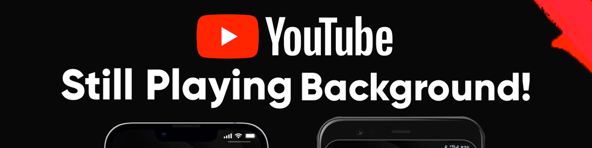

如何在後台播放 YouTube（Android 和 iOS）
在電腦上觀看 YouTube 時，你可以瀏覽其他網站，同時在浮動畫中畫窗口中保持視頻播放。如果你只想聽音頻，即使切換標籤頁，後台播放也能流暢進行。
但在移動設備上，只要妳離開 YouTube 頁面，視頻就會立即暫停。即使妳只是想聽聽聲音，也必須保持頁面處於活動狀態，這相當令人沮喪。
為了改善這種體驗，我們整理了幾種 簡單實用的方法 ，適用於 Android 和 iOS ，讓妳可以輕鬆地在手機後台播放 YouTube。
在後台播放 YouTube 的最簡單方法
對於大多數用戶來說，在後台播放 YouTube 最簡單的方法是訂閱 YouTube Premium。後台播放是其核心功能之一，訂閱後即可自動運行——即使妳切換應用或關閉屏幕，視頻仍會繼續播放。
不過官方訂閱價格比較高，單為了這個功能付費可能感覺不值得。
更實用的選擇是通過 奈飛小鋪 購買共享 YouTube Premium 帳戶 。費用僅為官方價格的三分之一左右，但仍可享受完整功能。無論妳使用的是安卓還是 iOS 系統，都能輕鬆享受穩定的後台播放。
如何讓 YouTube 在 Android 設備上保持後台播放
如果妳暫時不打算訂閱 Premium，還有其他方法可以 讓 YouTube 在後台播放 。在 Android 設備上，妳仍然可以使用瀏覽器或系統設置啟用後台播放。
在 Android 上使用桌面模式
最常見的方法之一是通過瀏覽器訪問 YouTube 桌面版網站。只需按照以下步驟操作：
- 複製視頻鏈接
找到妳想在後台播放的YouTube視頻。點擊視頻下方的"分享"按鈕，然後從菜單中選擇"複製鏈接"。 - 切換到桌面模式：
打開任意瀏覽器，將複製的網址粘貼到地址欄。視頻加載完成後，點擊右上角的三個點菜單，選擇"桌面網站"。 - 播放視頻並最小化頁面。
頁面刷新後，點擊播放按鈕開始播放視頻。然後返回主屏幕或切換到其他應用程序。 - 從通知欄繼續播放
向下滑動打開通知欄。找到播放控件，點擊"播放"即可在後台繼續播放視頻。
提示：
- 桌面模式可能加載緩慢，因此最好通過 Wi-Fi 使用。
- 部分 Android 默認瀏覽器可能不支持此功能。建議使用最新版本的 Chrome 或 Firefox。
在 Android 上啟用畫中畫功能
從 Android 8.0 Oreo 開始，系統內置了 畫中畫 (PiP) 模式。雖然此功能最初僅供 YouTube Premium 用戶使用，但谷歌於 2018 年開始將其推廣至美國所有 Android 用戶。
啟用畫中畫功能後，妳還可以 讓 YouTube 在後台播放 。設置方法如下：
- 前往"設置">"應用"，找到並點擊"YouTube"。
- 選擇畫中畫並將其打開。
- 返回主屏幕，然後打開 YouTube 並播放任意視頻。
- 播放視頻時，按下主屏幕按鈕。視頻會縮小為浮動窗口，讓妳可以繼續使用其他應用而不會受到干擾。
提示：
- 此功能僅適用於 Android 8.0 及以上版本。妳可以在"設置">"關於手機"中查看系統版本。
- 音樂視頻的畫中畫播放仍然需要 YouTube Premium 訂閱。
如何讓 YouTube 在 iOS 上後台播放
雖然iOS和Android的系統機制略有不同，但保持YouTube在後台播放的方法其實是類似的，只是操作方法上略有差別。
使用瀏覽器在 iOS 上播放 YouTube
在 iPhone 或 iPad 上，Safari 和 Chrome 默認不支持後台播放。不過，妳可以使用Dolphin 、 Firefox 或 Opera 等第三方瀏覽器繞過此限制。具體方法如下：
- 前往 App Store，下載 Opera 或 Dolphin，然後訪問 https://m.youtube.com 。
- 搜索妳想要觀看的視頻並確保它在瀏覽器中播放 - 不要讓它重定向到 YouTube 應用。
- 視頻開始播放後，切換到其他應用或鎖定屏幕。視頻將暫停。
- 向下滑動打開控制中心，然後點擊媒體小部件中的播放按鈕。視頻將在後台繼續播放。
- 如果控制中心沒有顯示視頻，請返回瀏覽器，再次按播放，然後鎖定屏幕或切換應用程序。
如果妳不想安裝其他瀏覽器，也可以使用 Opera 或 Firefox 的網頁版。切換到桌面模式後，視頻將以浮動迷你窗口的形式顯示，並在妳使用其他應用時保持在屏幕上。此方法非常適合多任務處理，但不支持屏幕鎖定時播放音頻。
在 iOS 上觸發畫中畫播放
iOS 也允許使用畫中畫 (PiP) 模式進行後台播放，但這種方法很大程度上取決於系統響應速度。在我們的測試中，它並不總是有效。如果妳想嘗試一下， 老款 iOS 設備通常成功率更高 。操作方法如下：
- 打開 YouTube 應用並開始播放視頻。
- 返回主屏幕並等待幾秒鐘 - 妳可能會看到一個小的浮動窗口自動出現（這是 PiP 模式）。
- 向下滑動打開控制中心，但不要按任何按鈕。
- 如果視頻暫停，請點擊控制中心的播放按鈕繼續播放。
- 視頻再次播放後，鎖定屏幕。它應該會繼續在後台運行。
讓 YouTube 在後台播放的備份方法
如果上述方法都不適合妳，並且妳不打算訂閱 YouTube Premium，妳仍然可以嘗試兩種備用選項：
- 使用支持後台播放的瀏覽器（例如 Brave 或 Vivaldi）
這些瀏覽器內置了"背景音頻"設置。啟用後，即使屏幕鎖定或切換應用程序，妳也可以繼續播放，而無需切換到桌面模式。
但是，播放控制體驗並不那麼流暢：要切換曲目或播放列表，妳需要返回瀏覽器而不是使用設備的控制面板。 - 下載視頻以供離線觀看
妳還可以選擇將視頻下載到妳的設備並在本地觀看，完全繞過 YouTube 的後台播放限制。這樣不僅可以消除廣告，還能讓妳無需網絡連接即可觀看。如果妳不確定如何操作，請查看我們精心挑選的YouTube 視頻下載技巧。
結論：在後台播放 YouTube 視頻的最佳方式
有很多方法可以讓 YouTube 保持後台播放，包括第三方瀏覽器、系統設置和畫中畫模式。但是，隨著 YouTube 的限制越來越嚴格，以及設備系統的不斷更新，這些方法的效果可能會因設備而異——妳可能需要嘗試幾次才能使其正常工作。
如果妳正在尋找更穩定、更省心的解決方案，通過 奈飛小鋪 購買 YouTube Premium 共享帳戶 實際上是妳的最佳選擇 。它無需複雜的設置，消除廣告，而且價格僅為官方訂閱價格的一小部分——讓妳可以隨時隨地輕鬆、安心地享受後台播放。
常問問題
如何在沒有任何應用程序的情況下在後台播放 YouTube？
在瀏覽器中打開 m.youtube.com，播放妳想觀看的視頻，然後切換到桌面模式。最小化瀏覽器，打開控制中心，然後點擊播放按鈕，即可在後台繼續播放 YouTube 視頻。
為什麼我的 YouTube 無法播放畫中畫？
如果畫中畫功能無法使用，可能是因為 YouTube 應用和系統設置中均未啟用該功能，或者該功能被廣告攔截器或 VPN 屏蔽。應用或系統版本過低也可能導致此問題。
如何在 iPhone 上後台運行 YouTube？
開始播放視頻，然後返回主屏幕即可觸發畫中畫模式——這在舊款 iPhone 上更可靠。或者，妳可以使用 Opera 瀏覽器播放視頻，然後切換應用並點擊控制中心的播放按鈕繼續播放音頻。